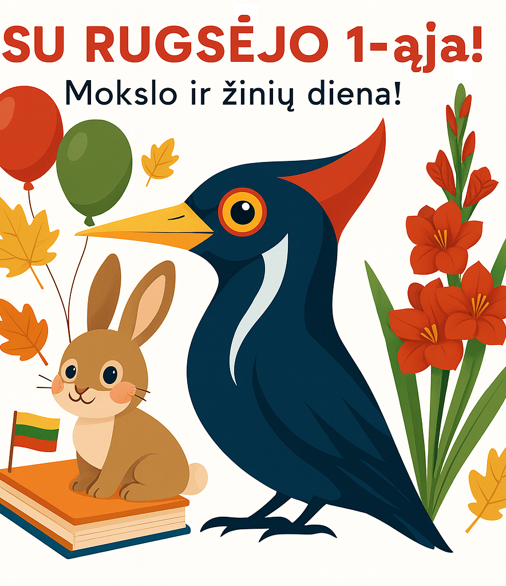
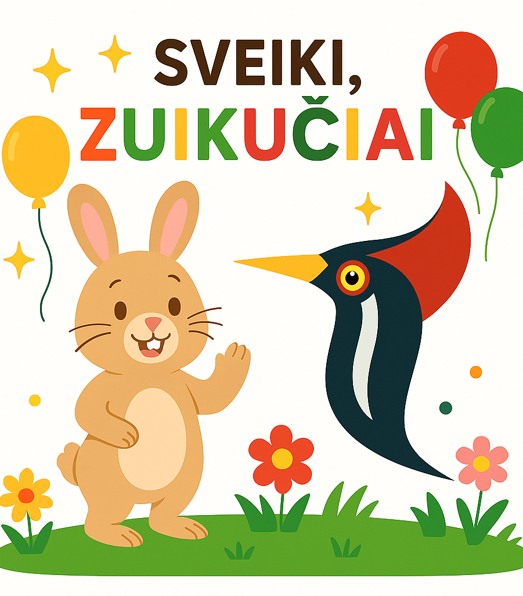

SF GENYS
2026–2027 mokslo metų informacija

Sveikiname visus su
2026–2027 mokslo metais!
Lauksime jūsų šeštadienį, rugsėjo 12 d., San Francisko lituanistinėje mokykloje „Genys“ (19806 Wisteria St, Castro Valley, CA 94546).
Mokslo metų pradžios šventė prasidės 9:30 val. ryto.
Pamokos vyks nuo 10:00 iki 13:30.
Primename, kad pirmąją dieną nuo 10:00 iki 11:30 vyks privalomas tėvų susirinkimas.

Sveiki, mieli tėveliai ir
mažiausieji Zuikiai!
Labai džiaugiamės, kad šį rudenį pradėsime naujus mokslo metus kartu su pačiais mažiausiais mūsų bendruomenės nariais.
Pirmasis „Zuikių“ klubo susitikimas vyks šeštadienį, rugsėjo 19 d.
Toliau susitiksime du kartus per mėnesį visus mokslo metus.
Mūsų veiklos vyks nuo 9:30 iki 12:00, po to vaikučiai galės smagiai leisti laiką mūsų žaidimų aikštelėje laisvo žaidimo metu.
„Zuikių“ grupė (1–4 m. vaikams) yra puiki galimybė žaismingai praleisti laiką kartu, susipažinti su lietuvių kalba, dainomis, eilėraštukais ir tradicijomis. Čia svarbiausia – draugystė, šypsenos ir pirmieji žingsneliai lietuviškoje aplinkoje.